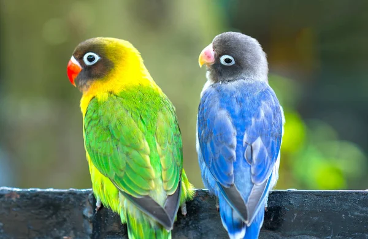

1 / 3

Lovebirds are small parrots that are known for their playful and affectionate personalities.
They are social birds that form strong bonds with their mates and can also bond with their owners.
2 / 3

The blue-naped parrot is a medium-sized parrot specie that is native to the Philippines.
They are intelligent birds that can learn to perform tricks and enjoy playing with toys.
3 / 3
The Indian ringneck parrot is a medium-sized parrot specie that is native to India and Southeast Asia.
They are known for their beautiful plumage and can live up to 25 years or more.
Opaline Lovebird
Size: 5-7 inches
Lifespan: 10-15 years
Colors: Red/orange head, light green/yellow wings
Diet: seeds, berries, fruits, nuts, grains, corn, maize, grass, and leaf buds
Conservation Status: Of Least Concern
Black Masked Lovebird
Size: 5-5.5 inches
Lifespan: Up to 30 years
Colors: Green plumage, reddish-brown forehead and forecrown, brownish-black cheeks, orange bib below the throat, which fades to yellow-green
Diet: Ground seeds, vegetables, insect larvae, corn, sorghum, millet
Conservation Status: Vulnerable